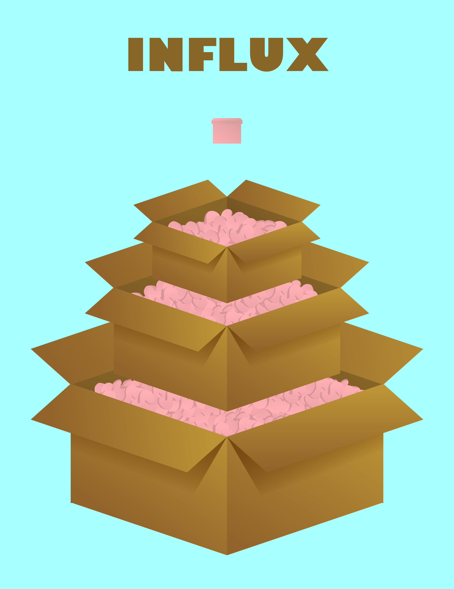

   
  

		<div class="container2">
		<div class="content justify" style="max-width:800px">
			<br /><br />

			<h3>Series On Plastic Waste</h3>
			
			<br />
			<br />
			<br />
			<p>
			The pieces in this series use different strategies to convey the negative aspects of plastic waste.
			<br />
			The first aims to showcase the excessive amount of packaging material that is often used. 
			It does so with a balance of text and image by allowing both to be simple and bold.
			<br />
			The second showcases plastic's harmful effects on the oceans by displaying a washed up dolphin recreated from plastic waste. 
			This piece relies heavily on the image.
			<br />
			The third image relies on the text to explain that less than 10% of plastic is recycled. 
			The image helps to put this in perspective by displaying 10 water bottles and having the last one be most of the way green. 
			This green represents the portion of all these bottles that is expected to be recycled based on the aforementioned statistic.
			<br />
			<br />
			2019, Adobe Illustrator and Photoshop</p>
		</div>
		
	</div>


  
